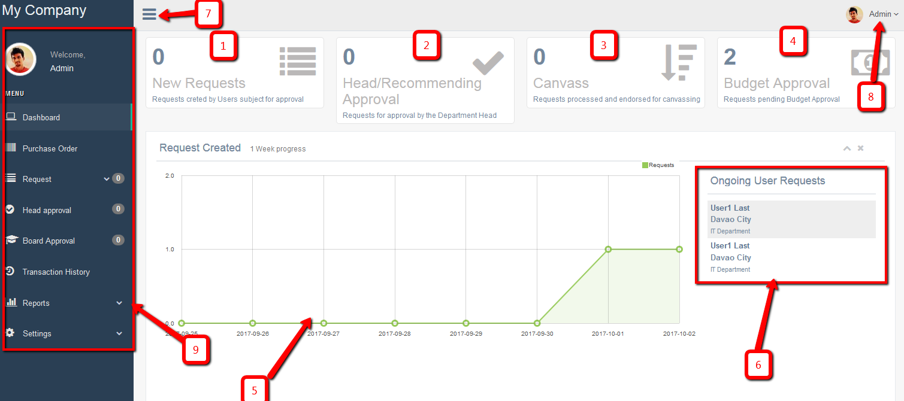
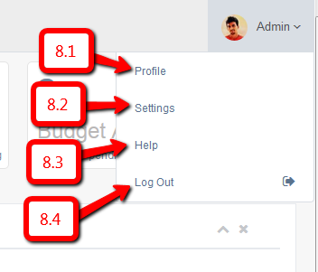
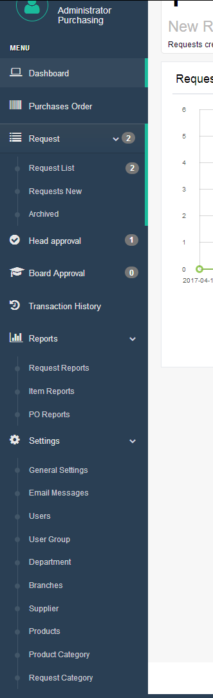

Admin/Board Dashboard
Figure 1. - Admin Dashboard
- Number of newly created request.
- Request currently in the Head/Recommending approval.
- Request currently canvassing.
- Request currently in the budget approval
- Shows the graph of the request
- Users currently have an ongoing request
- Hide/Show side bar menu
- Top navigation – Figure 1.1
- Profile
- Settings
- Help
- Logout
- Side bar menu – Figure 1.2
Figure 1.1 – Top Navigaton
Sidebar Menu
- Dashboard
- Purchases Order
- Request
- Request List
- Request New
- Archived
- Head Approval
- Board Approval
- Transaction History
- Reports
- Request Reports
- Item Reports
- PO Reports
- Settings
- General Settings
- Email Messages
- Users
- User Group/User Type
- Department
- Branches
- Supplier
- Products
- Product Category
- Request Category
Figure 1.2 – Sidebar Menu
Figure 2.0 – Light Green row

Setting up the system
Above all else, a set-up is needed to configure the system thus proceed to Settings Menu. See figure 1.2. You need to add first Department and Branches settings before adding a user’s. You also need to add the product Category before adding the Products.
General Settings
General settings page where you can set the Company Profile, Purchase Order, Print Request, Miscellaneous and the Dashboard.
Email Messages
The Email Messages page where you can set the content of the emails on every process. Once you click the “Edit” button, there you can see the content of the email on that process. Please fill out the “Subject” and the “Message” Content. There are default emails that have been stored for each action item result, but these can be edited anytime necessary. There are shortcodes that you need know to make it dynamic. See shortcodes below.
Shortcodes- - The name of the sender
- - The email of the sender
- - The Name of the recipient
- - The Email of the recipient
- - Purchase request number
- - Purchase request name/type
- - Purchase request date needed
- - Message of the sender
- - Purchase order number
- - Purchase order number
- - Item ID number
- - Item name
Users
Users page where you can add, edit, deactivate and change the password of the users. Before adding a user, please make sure that the Branch and The Department has been set up already.
- User Type:
There are 7 kind of user type on this system enumerated below.
-
Administrator
The administrator of this system who has the overall access of the purchasing process.
- General User
The User or the employee of the company.
- Canvasser
The canvasser is member of the purchasing department who is responsible for canvassing of the products or items requested.
- Budget
The budget is the user type who approves the budget set on the request
- Auditor
The role of this user is to audit and verify the Purchase Order.
- Board
Board is a special type of user who is only being notified for instances when its approval is highly needed. This is normally for requests of a much greater amount of budget. The board also has the ability to execute most of whatever an administrator user can.
- Property Department
This User type is the one who handles the receipt of the orders and in-charge of the inventory of the products or items once delivered by the supplier.
-
Administrator
- Branch
This is selected as to which branch the user-type is.
- Department
This is selected as to which department the user-type is
- Department Head
This is opted to be checked in the tickbock section if the user added is the head of the department or responsible to approve requests on the said area.
- First name
First name of the person or user.
- Last Name
The Last name of the person or user.
- Phone
Contact number of the user
- Email
Email address of the user.
- Password
Enter the desired password that you wanted for that particular user to use. You need to click the “activate” button after you add the user. However, user can also create their own password because after adding the user, an email confirmation will be sent to the user with the credentials created and for them to have the option to create a new password of their own.
User Group
User group has only currently seven (7) user types comprising the purchasing process. You can only edit the description on this selection. The description will appear when you edit the user-type.
Department
This page where you can add, edit and delete the User department. This will also appear when you add a user so this need to setup first before adding the user.
Branches
This page where you can add, edit and delete the branches of the company. This will appear also when you add a user to determine the branch such user is assigned to. This will be configured first before adding the users of this branch.
Supplier
This page where you can add, edit and delete the supplier. The supplier list can be visible in the canvasser page where they can select the preferred supplier for the requested products. Canvasser can enter a supplier that is not yet added on the list as another way to inform the admin of the information for the prospected list of suppliers.
Products
Admin can also add the common products here so that the requisitioner can only select the product they want to request. If the product does not exists yet in the system, a custom product can be entered or created.
Product Category
Admin can add a product category on this page. The category has second level-sub category that can be viewed or created. This will also be set up first before adding a product because this will appear when a product is added.
Request Category
Request category is for admin use to identify where the request is being categorized. This will appear when the admin assign the request to the canvasser.
Purchase Order
You can view in this page all the generated purchase orders. The “Update” button will be disabled once it is already approved by the Auditor
Request
- Request List – This is where you will find all the requests that all users have created and submitted in the system. Items of each requests can be viewed by clicking the “View Items” button and if you want to go to its further details, just click the link in the request name. The buttons under “Action” button will be different depending on the current status of the request.
- Request New – New purchase requests starts here.
- Archived – This is where all the completed requests can be viewed.
Head Approval
This menu or page will appear only if you have been assigned by the admin as a head of the department. As the head approval user you can view all newly submitted requests by your staff or even other department’s staffs if it was assigned to you as a recommending approval.
The buttons under “Action” button will be different depending on the current status of the request.
Click the “View Items” button to view the items that are assigned to you. You can also see the items that are assigned to the other head (see Assigned To column). You can only approve and deny items that were assigned to you. Whether approved or denied, it will notify the requisitioner of your action taken. There will be times that requisitioner will response to it and you will be able to view it on the Requisitioner Note column. All items should be approved by all the recommending officer before it will be forwarded to the admin for the next steps process.
Board Approval
This is where you can view request that is greater than the budget limit. Your action to approve for board approval and deny for some other reason necessary.
Transaction History
This is where you can view all the transaction records of the request.
Reports
All needed reporting can be viewed in this section.
Request Reports – It will show all the Request Reports. There are different filters to choose according to your purpose and preference, that is Branch, Department, Year and Month. You can view them as PDF, Excel and/or print them directly as is.
Item Reports – It will show you all the items requested. There are different filters to choose according to your purpose and preference, that is Branch, Department, Year and Month. You can view them as PDF, Excel and/or print them directly as is.
PO Reports – It will show you all the Purchase Order records. There are different filters to choose according to your purpose and preference, that is Branch, Department, Year and Month. You can view them as PDF, Excel and/or print them directly as is.